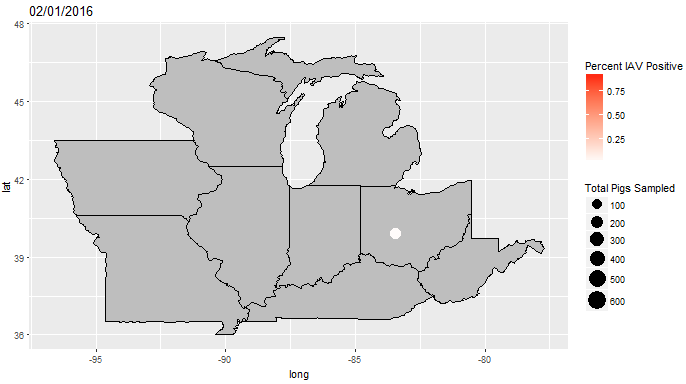

Tron
Language: Javascript
Date: Summer 2018
Javascript clone of the arcade game Tron. User can play against an AI implementing a minmax algorithm.
The AI chooses its moves to maximize the number of tiles it can reach before you, and minimize the total number of tiles you can reach

Swine Flu in Exhibition Pigs
Language: R, python
Date: Summer 2018
Resources: ggplot2, gganimate
I analyzed sequence data of exhibition pigs in county fairs in the midwest.
I formatted different datasets using quick python scripts and graphed them with R.

Fasta Tool
Language: Python
Date: Summer 2018
Resources: cxFreeze
A tool offering a variety of operations that can be performed on fasta files containing genetic data.
Offers subsampling, for example taking all sequences of human hosts, take 50 randomly per year with at least 5 per continent per year.
Also contains functionality for removing duplicates, removing incorrecly formatted entries, trimming sparse sequences, and converting between file types.
Created .exe and .dmg versions of the tool for easy distribution to biologists who lack computer skills.

Safewalk
Language: Java, SQL, Javascript, HTML/CSS
Date: Spring 2018
Resources: React.js, Spark, Freemarker, SQLite
I was part of a group that created an Uber-like web-app for escorting walkers on university campuses.
I coded the websockets dealing with live-updated locations, directions, and pickup/dropoff.

Stars
Language: Java, Javascript, HTML/CSS
Date: Spring 2018
Resources: Spark, Freemarker
I created a web-app that searches for stars within radius or by nearest neighbors.
Uses a K-D tree datastructure for time-efficient searches within a large 3-D area.